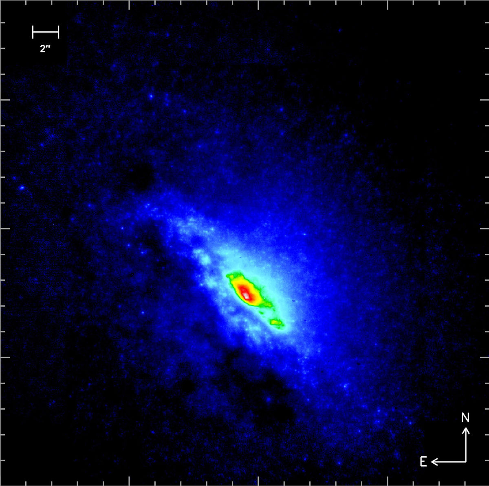

Aplicație 1. Luminozitatea stelara
Strălucirea unei stele este strălucirea observată de ochiul uman de la depărtare, în domeniul spectral la care este sensibil, cu toate că stelele emit energie pe întreg spectrul. Există un număr imens de stele şi galaxii pe cerul nopţii şi în general acestea sunt alimentate într-o măsură mai mare sau mai mică de acelaşi proces ca şi Soarele.

Stelele se diferenţiază în funcţie de multe caracteristici cum ar fi masa, dimensiunea şi printre cele mai importante luminozitatea L. Luminozitatea se măsoară în watts (W) sau sub formă de multiplu a luminozităţii solare L○.
Luminozitatea unei stele este data de formula : L=2πR2σT4
unde:
L = luminozitatea stelei (W)
R = raza stelei (m)
σ = constanta Stefan-Boltzmann (5,67*10-8 J/s-1m-2K-4)
Luminozitatea solara = 3,86 x 1026 W;